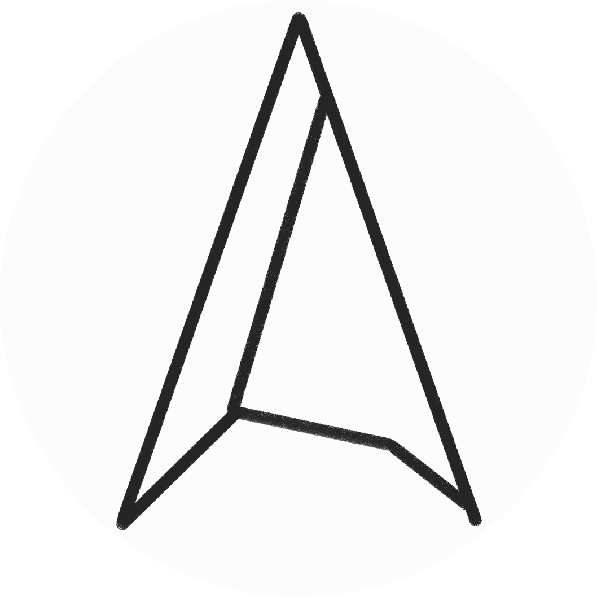

-- Finished + More Planned --
The Antimatter Initiative is an open-source command line tool that puts popular Linux tools, such as Playerctl into one convenient place. Antimatter will act more as a testing platform for my other projects, such as Atlas. Adaption to an Android app with a different purpose is a possibility.

-- WIP | ETA November --
Atlas is a voice assistant, designed to be lightweight, local, and smart. Unlike mainstream options like Google Assistant or Siri, Atlas uses a light FastText based intent model, coupled with lightweight local logic to deliver extremely fast results, on old hardware, without ever touching the internet (with the exception of dedicated internet searches). Atlas will integrate with several platforms, such as Google Maps and Home Assistant.